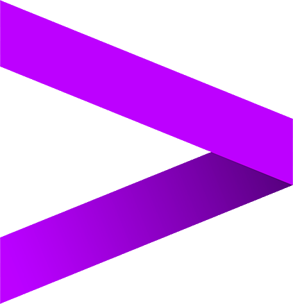
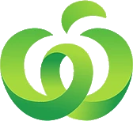

About
Application Analyst with 2.5+ years at Accenture, now pursuing a Master of Engineering Management at UTS Sydney, majoring in Software Systems Engineering. Focused on turning business requirements into working, data-informed solutions.
Projects
Work in progress
Projects in this area are in progress and will be published here.
Experience
2023 — 2025

AccentureApplication Analyst
Application Development Analyst
Mar 2024 — May 2025
Engaged in client requirement calls and translated business asks into scoped technical solutions, presenting workflow designs directly to stakeholders
Resolved production and UAT defects across live sites, maintaining platform stability and release quality
Built an automated asset tagging workflow, eliminating manual classification across marketing and content teams
Led requirements gathering and vendor coordination for an email integration, eliminating 100+ manual follow-ups per month
Supported sprint tracking and mentored new trainees, contributing to team documentation and delivery standards
Recognised with Accenture’s ACE Extra Mile Award (FY24) for stakeholder-facing delivery
Application Development Associate
Dec 2022 — Feb 2024
Managed digital asset requirements across multiple hotel properties, ensuring accurate, on-time content delivery
Used guest engagement data to inform personalised content strategy across digital platforms
Identified a recurring update bottleneck and built reusable templates, cutting manual effort by 10+ hours/week
Mapped and redesigned the content approval workflow, reducing delivery delays
Partnered with stakeholders to translate hotel-specific requirements into tailored digital experiences
2025 — Present

WoolworthsTeam Member
Sydney
Handled 100+ transactions per shift in a high-volume environment
Rostered across 3 departments during peak periods
Monitored self-checkout activity, holding re-scan-no-benefit at ~1%
Identified and escalated non-compliant stock, supporting loss prevention
Education
{{ e.dates }}
{{ e.role }}
{{ e.org }}
{{ e.note }}
Volunteering
2025 — Present
Women in Engineering and IT Gender Equity Ambassador
{{ b }}
Achievements
{{ a.title }}
{{ a.note }}